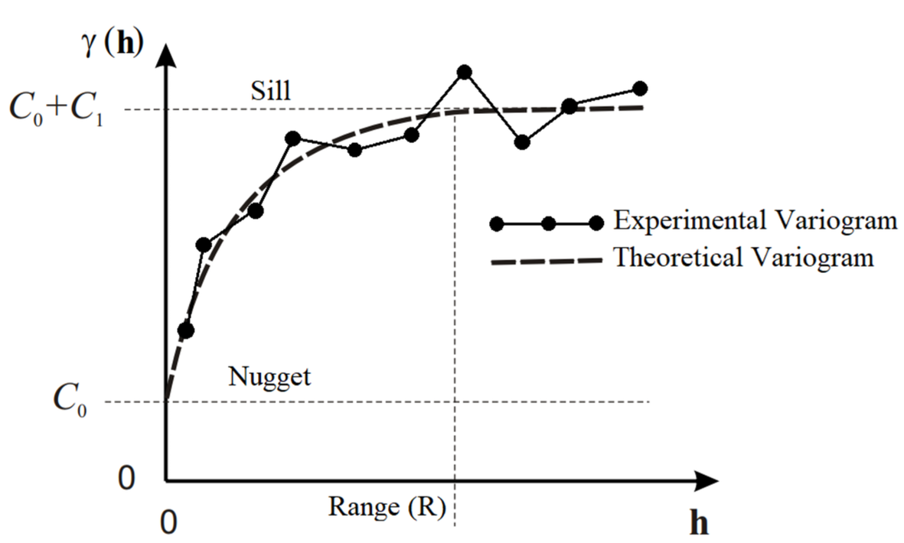

library(gstat)
library(sf)
library(tidyverse)
library(stars)Assignment 9 - Interpolation
Import Swiss precipitation data
dat_swiss <- sf::st_read("data/dataobserved.shp")
geom <- sf::st_read("data/ch_grenzen.shp")The following line calculates a sample variogram from precipitation data.
What is a variogram?
- A variogram is a description of the spatial continuity of the data, it describes how the spatial autocorrelation varies with distance and provides the means to model it. The experimental variogram is a discrete function calculated using a measure of variability between pairs of points at various distances. The simplest approach only takes into consideration the distance, and the direction is ignored (isotropy) but also an anisotropy structure can be implemented.
What is the purpose of parameter ‘width’? See documentation of function variogram
- The
widthparameter sets the width of subsequent distance intervals into which data point pairs are grouped for semivariance estimates.
empirical_variogram <- gstat::variogram(Z_1_10MM~1, data = dat_swiss, width = 5000)The next line calculates a variogram model.
What is a variogram model?
- A variogram model is a set of mathematical functions that describe spatial relationships. The appropriate model is chosen by matching the shape of the curve of the experimental variogram to the shape of the curve of the mathematical function.
estimated_variogram.model <- gstat::vgm(15000, 'Sph', 70000, 0.1)The variogram model (in the line above) is defined by parameters partial sill, range and nugget.
What type of model is used (see parameter ‘Sph’) and what is partial sill, range and nugget?
- The model fits a Spherical model (‘Sph’) for the variogram. Its features are that it has a linear growth when the distance between 2 points are short (closer to the point of origin); however, when it passes the range value, it will be a line parallel to the X-axis.

- R is the range of spatial auto-correlation, i.e., sample locations separated by distances closer than R are spatially auto-correlated, whereas locations farther apart than R are not.
- C0 is the nugget effect, which can be attributed to measurement errors or spatial sources of variation at distances smaller than the sampling interval.
- C1 is the partial sill (sill minus nugget).
- C0+C1 is the sill, which is the modeled semi-variance at range R.
#plot sample variogram and variogram model
plot(empirical_variogram, model = estimated_variogram.model)Define another variogram model of your choice to fit the sample variogram from above (see documentation of R function ‘vgm’).
Here we define a Gaussian model with different values of psill, nugget, and range that better fits our data.
estimated_variogram.model2 <- gstat::vgm(15000, 'Gau', 45000, nugget = 1200)
plot(empirical_variogram, model = estimated_variogram.model2)# directional sample variography (see parameter 'alpha')
empirical_variogram.dir <- gstat::variogram(Z_1_10MM~1, data = dat_swiss, width = 10000, alpha=c(0,45,90,135,180,225,270,315))
plot(empirical_variogram.dir) Directional sample variograms consider anisotropy in spatial autocorrelation.
Why does alpha 0 and 180, 270 and 90, 315 and 135, 225 and 45 yield the same results, respectively? Explain in your own words.
- The experimental variogram appears to have a point symmetry, but the values vary differently with direction, adding a second axis of symmetry with a direction of 45 degrees.
Create a simple map of variable Z_1_10MM.
map <- gstat::variogram(Z_1_10MM~1, data = dat_swiss, width = 5000, map = TRUE, cutoff = 100000)
data.frame(map) |>
ggplot(aes(x=map.dx,y=map.dy,fill=map.var1))+
geom_raster() +
scale_fill_viridis_c(option = 'magma') +
theme_minimal() +
labs(x = 'dx', y = 'dy', fill = '')In the case of alpha = 135 (and others) semivariance increases and then decreases with distance.
In the case of alpha = 45 and alpha = 225 semivariances increase very slowly with distance.
Compare to your map and try to explain these patterns.
The experimental variogram appears to have a point symmetry, but the values vary differently with direction, adding a second axis of symmetry with a direction of 45 degrees.
Additionally, we can interpolate the variable use a fitted variogram to create a continuous surface with kriging.
st_bbox(geom) %>%
st_as_stars(dx = 1000) %>%
st_crop(geom) -> grd
v.m = fit.variogram(empirical_variogram, estimated_variogram.model2)
v.m model psill range
1 Nug 1510.496 0.00
2 Gau 13432.040 38649.49plot(empirical_variogram, v.m)k = krige(Z_1_10MM~1,dat_swiss, grd, v.m)[using ordinary kriging]ggplot() + geom_stars(data = k, aes(fill = var1.pred, x = x, y = y)) +
geom_sf(data = st_cast(geom, "MULTILINESTRING")) +
geom_sf(data = dat_swiss) +
coord_sf(lims_method = "geometry_bbox") +
theme_minimal() +
labs(x = '', y= '', fill = 'Prediction') +
scale_fill_viridis_c(option = 'magma')